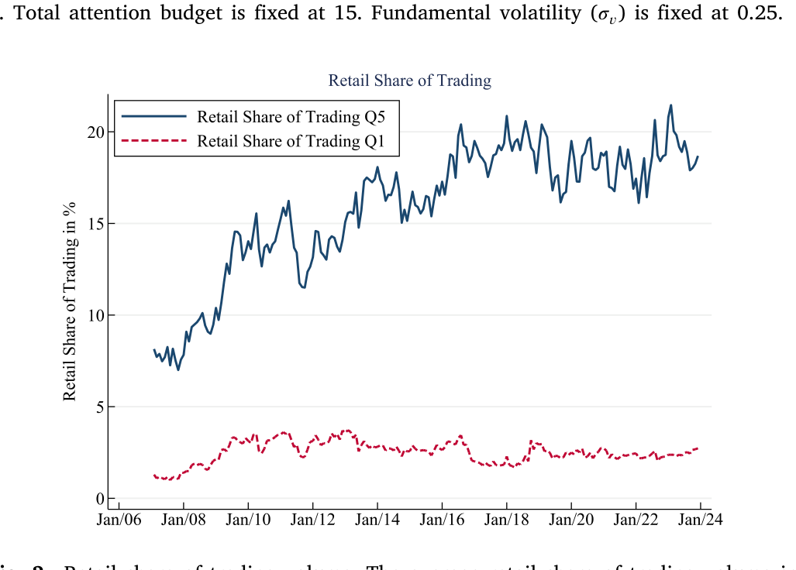
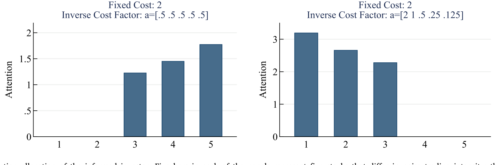
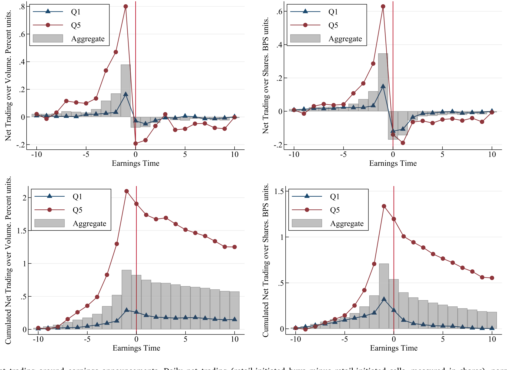
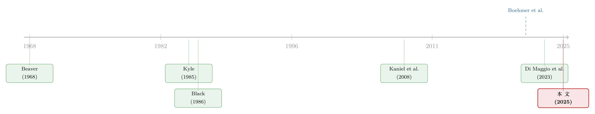

散户的栖息地：他们不是更笨，只是去了别人不愿去的地方
本文读的是 Laarits & Sammon (2025, Journal of Financial Economics)：散户并非随机地撒在整个市场上，而是高度集中、且长期稳定地扎堆在「难以估值」的股票里——无形资本高、现金流久期长、错误定价概率大的那一类。作者用一个 Kyle (1985) 式的注意力分配模型说明：知情的机构投资者在「藏身于散户噪声」和「为难估值股票生产信息的高昂成本」之间权衡，结果是主动让出这片栖息地。一连串围绕盈余公告的事实——对盈余新闻的低敏感度、对散户订单失衡的高敏感度、为负的公告溢价——都被这一个事实串了起来。
1 引言：一个被讲了四十年的故事，开始讲不通了
金融学里有一个流传甚广的二分法：机构是「聪明钱（smart money）」，散户是「噪声交易者（noise trader）」。机构组合庞大、有规模去采集和处理各种数据、能加杠杆、能做空；而散户则被认为深陷各种行为偏差——过度交易、熟悉性偏好、处置效应——不擅长做有意义的研究，因此被 Black (1986) 一锤定音地归入「噪声」。
这个故事很顺口，但它最近越来越讲不通了。
首先，一大批实证研究发现，散户的订单流在总量上正向预测未来收益。Kaniel et al. (2012) 就指出，散户订单流的方向与大小，能预测盈余公告当天及之后的收益。接着，一个更让人不安的事实出现了：Di Maggio et al. (2023) 记录到，机构投资者会在盈余公告前夕主动卖出、离场——而这恰恰是它们假定的信息优势本应最强的时刻。再加上 2020–2021 年那场散户狂潮（Welch, 2022），以及美国财政刺激支票如何掀起散户重仓股的集体上涨（Greenwood et al., 2023），「聪明 vs. 愚蠢」这条单一维度，显然已经装不下散户和机构各自的行为了。
于是，一个自然的问题是：如果不靠「谁更聪明」，我们还能用什么来区分散户和机构？
Laarits 和 Sammon 给出的答案，朴素得近乎固执：重点不在于谁更聪明，而在于他们各自去交易了什么样的股票。 散户偏爱「难以估值（hard-to-value）」的股票——那些当期基本面和市场价格之间联系薄弱的公司。比如一家生物科技公司，每股盈余（earnings per share, EPS）几乎说明不了什么，因为一款潜在重磅药物的成功不会体现为 EPS 的平缓增长，而可能在某一天突然兑现。对这种股票，机构那点「会读财报」的信息优势，被大大稀释了。
把这一个核心想法讲透，就是整篇论文的全部野心。
2 先立premise：散户交易是集中且持久的
要论证「散户有一片栖息地」，第一步得先证明这片地确实存在、而且不是今天在这儿、明天在那儿地乱飘。
作者用 Boehmer et al. (2021) 的算法从 TAQ 数据里识别散户发起的交易，构造出股票层面的散户交易强度（retail trading intensity）。结果很干脆：散户交易强度在横截面上既集中又持久。具体而言，在任意时点处于散户交易强度前 20% 的股票里，大约 90% 在 12 个月之后仍然停留在散户交易强度的前两个五分位。也就是说，散户重仓的那批股票，一年后基本还是那批股票。

Figure 2: Retail share of trading volume. The average retail share of trading volume in
这里值得停一下：能用一个既非过去收益、也非 beta、也非常见会计指标的简单函数来刻画的持久横截面差异，本身就稀罕。过去文献大多在研究「什么行为摩擦把某只股票带到散户眼前」，而很少问「散户在横截面上到底偏好什么」。这篇论文把问题从「注意力的偶然」改写成了「栖息地的必然」。
3 这片栖息地长什么样：难以估值
premise 立住了，接着的问题自然是：高散户股票，到底有什么共性？
作者用了三类「难以估值」的代理变量，层层加固这个论断：
- 现金流久期（cash-flow duration），按 Gormsen & Lazarus (2023) 构造——现金流越靠后，投资者要把基本面预测到更远的将来，越难估值；
- 无形资本（intangible capital），用 Peters & Taylor (2017) 与 Kogan et al. (2017) 的度量——无形资本比有形资本更难估值（Lev & Gu, 2016）；
- 三个复合度量：Stambaugh & Yuan (2017) 的错误定价分（mispricing score）、Golubov & Konstantinidi (2023) 的估值不确定性分、以及 Ben-David et al. (2023) 的「难估值分（hard-to-value score）」。
跨越这三类度量，结论一致：越难估值的股票，散户交易强度越高；而且在控制了市值五分位之后，这些关系依然成立。换句话说，散户扎堆难估值股票，并不是「难估值股票恰好都是小盘股、而散户爱炒小盘股」这种混淆所能解释的。
4 关键的一步：为什么机构会主动让出这片地？
到这里，论文真正关键的一步来了。散户偏好难估值股票，这是个事实；但事实本身不解释机制。为什么这会形成一个稳定的、机构避而远之的「栖息地」？
作者搭了一个 Kyle (1985) 框架下的多资产模型来回答。设定如下：一个代表机构的知情交易者（informed insider），手里有一份固定的注意力预算（attention budget），要把它分配到若干只股票上，以最大化总的预期交易利润。给某只股票多分一点注意力，就能提高对它的信号精度，但学习存在边际递减。股票在两个维度上不同：(A) 噪声交易强度——对应散户交易的强弱；(B) 生成给定精度信号的成本——对应这只股票「有多难估值」。此外，每只股票还有一个固定参与成本（fixed participation cost）：想交易它，先得付这笔门票钱。
4.1 模型设定与最优化问题
知情交易者要解的，是一个带预算约束的分配问题：
这里 \(a_i\) 是核心参数：\(a_i\) 越低，意味着在股票 \(i\) 上获得给定精度的信号越贵——这正是「难以估值」在模型里的定义。
4.2 利润从哪里来：回到 Kyle 的本源
要理解 \(\pi_i\) 的形状，得回到 Kyle (1985) 的均衡。在单期 Kyle 模型里，做市商按订单总量线性定价，知情者的最优下单量与均衡的价格冲击系数（Kyle's lambda）分别为：
$$x_i = \beta_i\,(v_i - p_{0,i}), \qquad \beta_i = \frac{\sigma_{u,i}}{\sqrt{\Sigma_i}}, \qquad \lambda_i = \frac{1}{2}\,\frac{\sqrt{\Sigma_i}}{\sigma_{u,i}}$$
其中 \(\sigma_{u,i}\) 是噪声交易（散户订单流）的标准差，\(\Sigma_i\) 是知情者凭信号化解掉的那部分基本面不确定性。由此，知情者在股票 \(i\) 上的预期利润为：
$$\mathbb{E}[\pi_i] = \tfrac{1}{2}\,\sigma_{u,i}\,\sqrt{\Sigma_i}$$
这条利润公式是整套直觉的钥匙：利润同时随噪声交易 \(\sigma_{u,i}\) 与信息优势 \(\sqrt{\Sigma_i}\) 上升。前者就是「藏身于散户噪声」的好处——散户越多，知情者越能把自己的单子藏在里面、价格冲击 \(\lambda_i\) 越小；后者则要靠花注意力、付成本去生产。完整推导见论文的 Online Appendix A.1，这里只取它最关键的形态。
4.3 两股力量的拔河，与那个反转
现在把两个维度放在一起，看知情者会往哪儿分配注意力。
只看噪声：如果股票只在 \(\sigma_{u,i}\) 上不同，那么由 \(\mathbb{E}[\pi_i] \propto \sigma_{u,i}\) 可知，知情者会把注意力更多地投向散户活跃的股票——这就是 Kyle 的标准直觉，噪声越多越好藏身。图 1 左上角的面板正是这个单调上升的关系。
但真正关键的一步在于：一旦允许「生产信号的成本」在横截面上不同，而且——这是作者的核心假设——散户偏好的恰恰是那些 \(a_i\) 最低、最难估值的股票，事情就反转了。此时第二股力量（高昂的信息生产成本）可能压过第一股力量（藏身的好处）。图 1 右上角的面板显示：在这种参数化下，知情者的注意力分配随噪声交易强度单调下降，与左上角完全相反。再叠加固定参与成本，当成本从 0 升到 2 时，知情者干脆彻底放弃学习散户兴趣最高的第 4、第 5 只股票（噪声标准差 1.75 和 2）。

Figure 1: Optimal attention allocation of the informed investor. Five bars in each of the panels represent five stocks that differ in noise trading in
于是「栖息地（habitat）」就这样浮现出来：一批因为太难估值、信号生产太贵而被机构主动放弃的股票，被散户独占。模型给出的最终判断很克制——这两股力量谁占上风，取决于散户是否真的有一片难估值股票的持久栖息地，因而归根结底是一个实证问题。前面第 2、3 节，正是为这个实证问题铺好了答案。
5 把模型拿到盈余公告上检验
模型怎么验？作者的聪明之处，是把战场选在盈余公告（earnings announcement）——基本面信息最集中释放的时刻。模型给出两条可检验的预测：
- 预测 1A：高散户股票应有更大量级的盈余惊喜、更剧烈的公告日收益，以及更大的分析师预期分歧；
- 预测 1B：高散户股票对盈余新闻的反应应当更弱，其盈余惊喜应主要由特异性信息驱动。
数据印证得相当干净。先看波动与分歧：高散户股票的标准化未预期盈余（standardized unexpected earnings, SUE）标准差，几乎是低散户股票的 3 倍；分析师预期分歧大约是 5 倍。再看敏感度：用 Kothari & Sloan (1992) 的盈余反应回归，作者发现——给定相同量级的盈余惊喜——高散户股票的价格反应显著更小。处于过去散户交易份额最高五分位的股票，对 SUE 新闻的敏感度比中间五分位的股票低了将近 50%；这个效应在控制了已知与散户活跃度相关的特征后依旧存在，且在几乎整个公司规模分布上都成立。
一句话：高散户股票噪声更大、价格对「真新闻」却更迟钝。这正是「难以估值」在数据里的指纹。
6 谁在公告前买入：流动性提供与那个为负的溢价
接着，一个更有意思的问题是：盈余公告前后，散户究竟在做什么？
答案是：散户在盈余公告前主动买入。把散户净买入（散户发起的买单减卖单）按当日成交量归一化，在公告前的「跑道」上累计超过 2%。也就是说，散户在主动承担这些股票增量的盈余新闻风险。

Figure 3: Abnormal net trading around earnings announcements. Daily net trading (retail-initiated buys minus retail-initiated sells, measured in share
这恰好从另一面照亮了 Di Maggio et al. (2023) 的发现——机构在公告前离场。作者发现这种离场在高散户股票里尤为明显：机构明白难估值股票的公告日收益既波动又特异，于是避之唯恐不及，把这块风险留给了愿意接盘的散户。这看起来很像流动性提供（liquidity provision）。
证据进一步支持这一点：在公告层面，被散户大量买入的股票，在随后 60 天（含公告日）跑赢被散户大量卖出的股票——这一模式 Kaniel et al. (2012) 曾无条件地记录过，而在高散户股票里尤其显著。作者做了一个分解，把这部分可预测的收益差中约 25% 归因于流动性提供。
最反直觉的一幕留到了盈余公告溢价（earnings announcement premium）上。自 Beaver (1968) 以来我们就知道，临近公告的股票平均收益偏高；Savor & Wilson (2016) 提出一种解释——公告期溢价补偿的是系统性风险。但如果高散户股票的盈余新闻主要是特异性的，那它们的公告溢价就该更小。结果不只是更小，而是翻成了负数：无条件来看，六天的公告溢价是 +32 个基点（bps）；而散户交易最高五分位的股票，同一窗口的平均收益是 −48 bps。与此同时，在公告之前的收益上，高散户股票反而比低散户股票更高——这又给 Frazzini & Lamont (2007) 记录的「公告前高收益之谜」添了一把柴，并暗示流动性提供正是推动公告前高收益的力量之一。
（关于散户需求如何在另一类资产上扭曲价格，可参见《当波动率曲面被「散户」推歪：从券商宕机里读出的需求压力》。）
7 文献脉络
把这条线索拉直来看，它的来路其实很清楚。
最早的两块基石，一块来自会计——Beaver (1968) 确立了盈余公告的信息含量；另一块来自微观结构——Kyle (1985) 给出了知情交易者藏身于噪声、按价格冲击下单的经典框架。紧接着，Black (1986) 用一篇《Noise》把「噪声交易者」这个概念钉进了金融学的词典。
然后，散户研究兵分两路。一路强调散户的「偏差」：过度交易（Barber & Odean, 2000）、熟悉性偏好（Huberman, 2001）、处置效应（Odean, 1998）。另一路却不断发现散户没那么蠢：Kaniel et al. (2008, 2012) 证明散户订单流正向预测收益、尤其在盈余公告附近；Boehmer et al. (2021) 提供了从 TAQ 识别散户交易的算法，让大样本横截面研究成为可能。与此同时，需求体系（demand system）这一支——Koijen & Yogo (2019)、Koijen et al. (2024)——开始用特征去刻画不同投资者类别的需求曲线。

这篇论文站在两路的交汇处：它接住了 Boehmer et al. (2021) 的测量工具、回应了 Di Maggio et al. (2023) 关于机构盈余前离场的发现，又给需求体系文献补上了一个全新的区分维度——难以估值。它不否认散户有偏差，而是说：正因为散户偏好难估值股票，这些偏差才特别难被专业投资者纠正。
（这条「谁在交易、谁在定价」的脉络，本博客已经走过几站，例如《异象收益究竟是谁推动的？》与《买卖双方各执一词：当 193 个异象告诉你「谁是聪明钱」》。）
8 评论与延伸（Q&A + 研究方向）
(a) 几个可能的疑问
Q：这和「散户=噪声交易者」的经典观点，本质区别在哪？
经典观点是一维的：把投资者按「聪明程度」排队。这篇论文换了一根轴——按「交易标的的可估值性」来排。在这根新轴上，散户不是更笨，而是更愿意（或被吸引去）承担难估值股票的特异性风险，机构则因信息生产成本太高而主动退出。同一批「偏差」，在这片栖息地里之所以难被套利掉，正是因为机构不愿来。
Q：Boehmer et al. (2021) 的算法已被指出会错分交易，结论还站得住吗？
这是最该追问的一点。Barber et al. (2024) 和 Battalio et al. (2023) 都批评过该算法既漏掉真散户、又把机构单错认成散户。作者在 Online Appendix A.2 做了定量评估，结论是错分的量级太小，不足以解释观察到的散户强度横截面差异；并且换用 Barber et al. (2024) 改进后的方向分类算法，所有结果依然成立。算稳健，但这终究是「自证清白」，读者心里要留个标记。
Q：到底是散户主动挑了难估值股票，还是难估值股票「吸引」了散户？因果方向如何？
论文对此是诚实的：模型里允许两种解读并存——难估值股票更「抓眼球」（attention-grabbing），或者散户带着一丝老练，意识到自己在易估值股票上没有信息优势、于是避开。本文识别的是横截面规律（难估值 ↔ 高散户）与机构的最优反应，并未声称跑出了一个干净的外生冲击来钉死因果方向。这正是它作为「描述性 + 模型」论文的边界。
Q：「公告前散户买入」被解读成流动性提供，怎么和「散户能预测收益」区分开？
两者并不互斥。流动性提供本身就要求一个事前补偿：做市商持有天然偏多的库存、又怕公告日的特异波动，于是愿意给那些在公告前接盘的散户一个溢价。作者把公告后可预测收益差里约 25% 归到流动性提供，剩下的留给其它渠道。所以「散户赚到了钱」与「散户在提供流动性」在这里是同一枚硬币的两面。
Q：高散户股票的公告溢价为负，这不反常吗？
在 Savor & Wilson (2016) 的「公告溢价补偿系统性风险」框架下，恰恰不反常。如果高散户股票的盈余新闻主要是特异性的、与系统性风险关系薄弱，那它们本就不该拿到这份补偿；而叠加上散户在公告前推高价格（流动性提供），公告窗口内的实现收益被进一步压低，最终翻负（
−48bps）。反常的是符号，自洽的是逻辑。
Q：这对需求体系和异象研究意味着什么？
两点。其一，它给「为什么散户财富占比不高、却能对价格产生大影响」提供了一个解释：因为他们集中在难估值、机构缺席的股票上，单位资金的边际影响被放大。其二，作者发现散户偏好的股票往往落在错误定价分的两个极端，即异象组合的端点；这意味着散户的交易会阻碍机构去纠正错误定价，从而直接参与制造了异象收益。
(b) 几个可能的研究问题与提案
1. 公司债市场里有没有「散户栖息地」？
【经济故事】零售债券平台（如 TreasuryDirect 之外的券商零售通道）兴起后，散户开始直接持有公司债。如果「难以估值 → 散户扎堆 → 机构退出」的机制可推广，那么高收益债、长久期债、信息不透明发行人的债券，应当出现类似的散户聚集与流动性提供模式。 【可行性】中。需要 TRACE 的逐笔交易加上散户/机构方向识别——而债券市场缺少股票那样成熟的散户识别算法，这是主要障碍。可考虑用小额成交（odd-lot）作为散户代理，识别策略偏弱，但 premise 阶段的「集中与持久性」事实是 doable 的。
2. 外资持有人会不会也避开难估值资产？
【经济故事】外资相对本土机构存在天然的信息劣势（语言、披露、距离），按本文逻辑，他们在难估值股票/债券上的信息生产成本更高，应当系统性地低配难估值资产，把这片地让给本土投资者。 【可行性】中。股票端可用 FactSet/13F 与各国持仓数据，债券端可用 TIC 或 eMAXX 的持有人明细，按本文的难估值代理（无形资本、久期、错误定价分）做横截面回归。识别仍是相关性，但「外资 × 难估值」的交互项本身就有信息量。
3. 做市商库存风险与公告前定价，能否搬到债券？
【经济故事】本文把公告前高收益归因于做市商的库存风险（Johnson & So, 2018）。公司债做市商的库存约束更硬、风险限额更紧，若难估值债券在评级行动/盈余季前后也呈现「中介索取溢价」，就能把这条机制从股票拓展到信用市场。 【可行性】中偏低。需要交易商层面的库存数据（如 FR 2004 或监管报送），获取门槛高；但一旦拿到，识别会比股票更干净，因为债券做市更集中、库存更可观测。
4. 被动资金的扩张如何重塑「栖息地」？
【经济故事】ETF 与指数基金把大量资金机械地铺到全市场，这是否会侵蚀机构在易估值股票上的信息生产、反过来改变知情者的注意力分配，使「栖息地」的边界移动？ 【可行性】中。可用指数纳入/再平衡作为准外生冲击（参见《你以为买的是「整个市场」，其实买的是一套交易规则》），观察被动持股上升后，同一只股票的散户强度与盈余敏感度是否漂移。
我的判断
这篇论文最漂亮的地方，是用一个朴素的事实——散户扎堆难估值股票——把一堆看似各说各话的现象（散户订单流正向预测收益、机构公告前离场、公告前高收益之谜、公告溢价的横截面差异）串成了一条线。模型不复杂，但它把「藏身于噪声」与「信息生产成本」这两股 Kyle 框架里本就存在的力量，安排成了一场会反转的拔河，叙事干净利落。
担忧主要在识别层面。其一，全文的核心仍是横截面相关性 + 一个解释性模型，「难以估值导致散户聚集」与「散户聚集本身让股票更难估值」之间，缺一个外生冲击来切开——这一点作者也没有硬充。其二，整套结论建立在 Boehmer et al. (2021) 算法之上，尽管附录做了稳健性，但散户识别的系统性误差若与「难估值」相关（比如难估值股票的交易微观结构本就特殊），偏误就未必能被「量级太小」一句带过。
后续我最想看到的，是把这套「栖息地」逻辑搬到信用市场和外资持有人上：如果难估值的逻辑是普适的，它就该在债券、在跨境持仓里留下同样的指纹；如果不是，那它揭示的也许更多是股票市场散户参与方式的特殊性，而非一条关于信息生产的一般规律。无论哪种结果，都比现在更接近因果。
参考文献
- Barber, B. M., Huang, X., Jorion, P., Odean, T., & Schwarz, C. (2024). A (sub) penny for your thoughts: Tracking retail investor activity in TAQ. Journal of Finance 79(4), 2403–2427.
- Barber, B. M., & Odean, T. (2000). Trading is hazardous to your wealth: The common stock investment performance of individual investors. Journal of Finance 55(2), 773–806.
- Battalio, R. H., Jennings, R. H., Saglam, M., & Wu, J. (2023). Identifying Market Maker Trades as "Retail" from TAQ: No Shortage of False Negatives and False Positives. Working Paper.
- Beaver, W. H. (1968). The information content of annual earnings announcements. Journal of Accounting Research, 67–92.
- Ben-David, I., Kim, B., Moussawi, H., & Roulstone, D. (2023). Corporate transactions in hard-to-value stocks. Review of Corporate Finance Studies 12(3), 539–580.
- Black, F. (1986). Noise. Journal of Finance 41(3), 528–543.
- Boehmer, E., Jones, C. M., Zhang, X., & Zhang, X. (2021). Tracking retail investor activity. Journal of Finance 76(5), 2249–2305.
- Di Maggio, M., Franzoni, F., Kogan, S., & Xing, R. (2023). Avoiding Idiosyncratic Volatility: Flow Sensitivity to Individual Stock Returns. Working Paper.
- Frazzini, A., & Lamont, O. A. (2007). The Earnings Announcement Premium and Trading Volume. NBER Working Paper.
- Golubov, A., & Konstantinidi, T. (2023). 引用自 Laarits & Sammon (2025)：valuation uncertainty score.
- Gormsen, N. J., & Lazarus, E. (2023). 引用自 Laarits & Sammon (2025)：cash-flow duration.
- Greenwood, R., et al. (2023). 引用自 Laarits & Sammon (2025)：US stimulus checks and retail-heavy stock rallies.
- Johnson, T. L., & So, E. C. (2018). Asymmetric trading costs prior to earnings announcements: Implications for price discovery and returns. Journal of Accounting Research 56(1), 217–263.
- Kaniel, R., Liu, S., Saar, G., & Titman, S. (2012). Individual investor trading and return patterns around earnings announcements. Journal of Finance 67(2), 639–680.
- Kaniel, R., Saar, G., & Titman, S. (2008). Individual investor trading and stock returns. Journal of Finance 63(1), 273–310.
- Kogan, L., Papanikolaou, D., Seru, A., & Stoffman, N. (2017). Technological innovation, resource allocation, and growth. Quarterly Journal of Economics 132(2), 665–712.
- Koijen, R. S., Richmond, R. J., & Yogo, M. (2024). Which investors matter for equity valuations and expected returns? Review of Economic Studies 91(4), 2387–2424.
- Koijen, R. S., & Yogo, M. (2019). A demand system approach to asset pricing. Journal of Political Economy 127(4), 1475–1515.
- Kothari, S. P., & Sloan, R. G. (1992). Information in prices about future earnings: Implications for earnings response coefficients. Journal of Accounting and Economics 15(2–3), 143–171.
- Kyle, A. S. (1985). Continuous auctions and insider trading. Econometrica, 1315–1335.
- Lev, B., & Gu, F. (2016). The End of Accounting and the Path Forward for Investors and Managers. John Wiley & Sons.
- Peters, R. H., & Taylor, L. A. (2017). Intangible capital and the investment-q relation. Journal of Financial Economics 123(2), 251–272.
- Savor, P., & Wilson, M. (2016). Earnings announcements and systematic risk. Journal of Finance 71(1), 83–138.
- Stambaugh, R. F., & Yuan, Y. (2017). Mispricing factors. Review of Financial Studies 30(4), 1270–1315.
- Welch, I. (2022). The wisdom of the Robinhood crowd. Journal of Finance 77(3), 1489–1527.